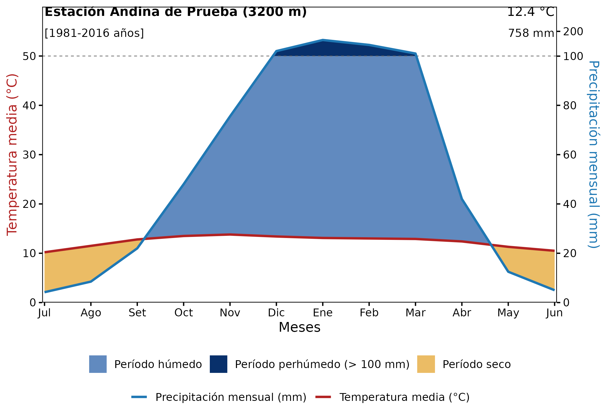
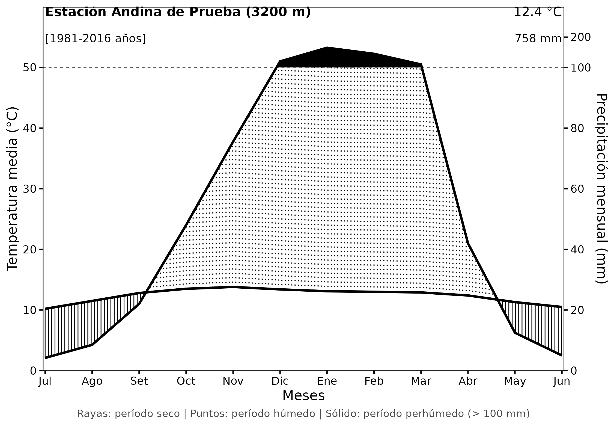
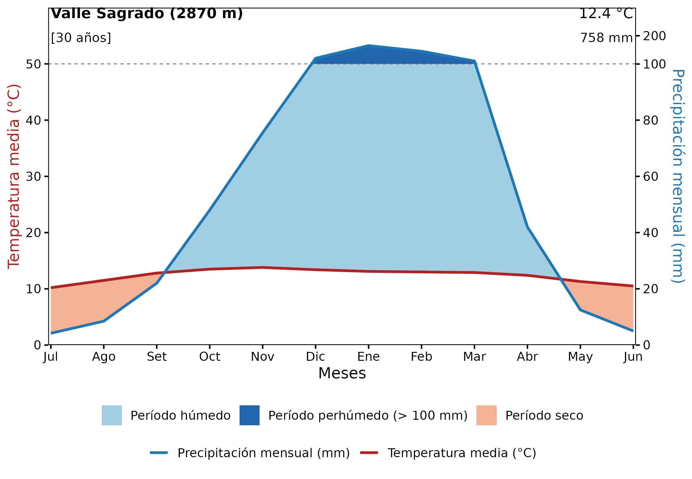

Climatodiagramas de Walter-Lieth por Punto y por Área con rpisco
Source:vignettes/climatodiagrama-walter-lieth.Rmd
climatodiagrama-walter-lieth.RmdEl climatodiagrama de Walter-Lieth (Walter y Lieth, 1960) es una herramienta estándar en ecología, climatología, agronomía e hidrología para evaluar el régimen bioclimático y el balance hídrico mensual de una localidad o territorio.
El paquete rpisco incorpora la función
climatodiagrama(), la cual genera gráficos bioclimáticos
basados en ggplot2 y listos para publicación o
personalización.
En esta guía se describen tres flujos de trabajo prácticos: 1. Flujo A: Creación del climatodiagrama a partir de datos tabulares propios del usuario (CSV o data frame). 2. Flujo B: Recuperación y cálculo de datos de precipitación y temperatura por punto (coordenadas o estaciones meteorológicas) utilizando las grillas de PISCO. 3. Flujo C: Recuperación y cálculo de datos por área territorial (distritos, provincias o cuencas hidrográficas) mediante extracción zonal media.
Fundamentos del Diagrama de Walter-Lieth
- Escala Ombrotérmica: La temperatura media mensual (, en °C) y la precipitación mensual (, en mm) se trazan sobre un mismo eje vertical con una relación de (criterio de Gaussen).
- Período Seco (): Cuando la curva de precipitación se ubica por debajo de la curva de temperatura, la precipitación no cubre la evapotranspiración potencial de referencia, indicando condiciones de aridez o estrés hídrico.
- Período Húmedo (): Cuando la curva de precipitación sobrepasa a la de temperatura, existe disponibilidad hídrica favorable.
- Período Perhúmedo (): Para evitar que precipitaciones torrenciales distorsionen la escala del diagrama, los valores que superan los se comprimen 10 veces (), destacando este exceso con un sombreado sólido característico.
- Disposición Temporal: En el hemisferio sur, la representación tradicional ordena los meses de julio a junio, manteniendo el período estival y de mayores precipitaciones en el centro del gráfico.
Flujo A: Diagrama con Datos Proporcionados por el Usuario
Si ya dispone de registros mensuales de precipitación y temperatura
(de una estación del SENAMHI, una tesis o un archivo CSV), puede
utilizarlos directamente estructurando un data.frame o
tibble de 12 filas con las columnas del
mes, la temperatura media (°C) y la precipitación total (mm).
rpisco incluye el conjunto de datos de prueba
clima_ejemplo:
# Cargar el conjunto de datos de ejemplo
data(clima_ejemplo)
print(clima_ejemplo)
#> MES TMED PTOT
#> 1 Jul 10.2 4.2
#> 2 Ago 11.5 8.5
#> 3 Set 12.8 22.0
#> 4 Oct 13.5 48.0
#> 5 Nov 13.8 75.5
#> 6 Dic 13.4 120.0
#> 7 Ene 13.1 165.0
#> 8 Feb 13.0 145.0
#> 9 Mar 12.9 110.0
#> 10 Abr 12.4 42.0
#> 11 May 11.3 12.5
#> 12 Jun 10.5 5.01. Estilo a Color (estilo = "color")
El estilo por defecto resalta visualmente las tres zonas bioclimáticas (dorado para el período seco, celeste para el húmedo y azul marino para el perhúmedo):
p_color <- climatodiagrama(
datos = clima_ejemplo,
estacion = "Estación Andina de Prueba",
elevacion = 3200,
anios = "1981-2016",
estilo = "color"
)
p_color
2. Estilo Clásico de Publicación
(estilo = "trama")
Para publicaciones científicas en blanco y negro,
estilo = "trama" dibuja rayas verticales continuas para el
período seco, líneas punteadas para el húmedo y relleno negro sólido
para el perhúmedo:
p_trama <- climatodiagrama(
datos = clima_ejemplo,
estacion = "Estación Andina de Prueba",
elevacion = 3200,
anios = "1981-2016",
estilo = "trama"
)
p_trama
3. Personalización con ggplot2 y Exportación
Dado que climatodiagrama() devuelve un objeto
ggplot, se puede enriquecer con temas, tipografías y
guardarse mediante ggplot2::ggsave():
# Personalizar tipografía y paleta
p_custom <- climatodiagrama(
datos = clima_ejemplo,
estacion = "Valle Sagrado",
elevacion = 2870,
anios = "30",
estilo = "color",
color_seco = "#F4A582",
color_humedo = "#92C5DE",
color_perhumedo = "#2166AC"
) +
theme(plot.title = element_text(face = "bold"))
p_custom
Para guardar en alta resolución:
ggplot2::ggsave(
filename = "climatodiagrama_valle_sagrado.png",
plot = p_custom,
width = 7.5,
height = 5.2,
dpi = 300
)Flujo B: Recuperación de Datos por Punto con
rpisco
En muchas localidades andinas o amazónicas no se cuenta con
estaciones meteorológicas físicas continuas. Con rpisco es
posible extraer las climatologías mensuales directamente de los
productos grillados oficiales: * Precipitación:
PISCOp_clim2.nc (normal mensual 1981–2010 de 12 capas). *
Temperatura Máxima:
tmax_mean_1981-2010_01_12.nc (normal mensual 1981–2010 de
12 capas). * Temperatura Mínima:
tmin_mean_1981-2010_01_12.nc (normal mensual 1981–2010 de
12 capas).
La temperatura media mensual se estima como .
Paso a paso: Extracción para una coordenada geográfica
Consideremos la ciudad de Cusco (latitud: , longitud: , elevación: ):
# 1. Autorizar la descarga de las normales climatológicas en la caché
pisco_download("climatology")
pisco_download("tmax_clim")
pisco_download("tmin_clim")
# 2. Cargar los SpatRasters de 12 capas mensuales
r_prec <- pisco_read("climatology")
r_tmax <- pisco_read("tmax_clim")
r_tmin <- pisco_read("tmin_clim")
# 3. Definir el punto de interés
punto_cusco <- data.frame(lon = -71.96, lat = -13.53)
# 4. Extraer los valores de las 12 capas para el punto
prec_vals <- as.numeric(terra::extract(r_prec, punto_cusco)[1, -1])
tmax_vals <- as.numeric(terra::extract(r_tmax, punto_cusco)[1, -1])
tmin_vals <- as.numeric(terra::extract(r_tmin, punto_cusco)[1, -1])
# 5. Calcular temperatura media mensual
tmed_vals <- (tmax_vals + tmin_vals) / 2
# 6. Organizar en orden hemisferio sur (Julio a Junio)
orden_sur <- c(7:12, 1:6)
meses_sur <- c("Jul", "Ago", "Set", "Oct", "Nov", "Dic",
"Ene", "Feb", "Mar", "Abr", "May", "Jun")
datos_punto <- data.frame(
MES = factor(meses_sur, levels = meses_sur),
TMED = round(tmed_vals[orden_sur], 1),
PTOT = round(prec_vals[orden_sur], 1)
)
# 7. Graficar el climatodiagrama de la estación/punto
climatodiagrama(
datos = datos_punto,
estacion = "Cusco (PISCO Gridded)",
elevacion = 3399,
anios = "1981-2010",
estilo = "color"
)Flujo C: Recuperación de Datos por Área con rpisco
Cuando se analiza una cuenca hidrográfica, una reserva natural o una provincia completa, el régimen bioclimático se caracteriza a partir de la media zonal espacial sobre el polígono territorial.
Paso a paso: Extracción para un polígono territorial
A continuación se muestra cómo procesar un polígono (por ejemplo, la
provincia de Anta, Cusco obtenida con
geoperu):
library(geoperu)
# 1. Obtener la geometría de la provincia
anta_provincia <- geoperu::get_geo_peru("ANTA", level = "prov", simplified = TRUE)
# 2. Extraer el promedio espacial mensual sobre toda la provincia
prec_area <- pisco_extract(r_prec, polygons = anta_provincia, id_col = "provincia", fun = mean)
tmax_area <- pisco_extract(r_tmax, polygons = anta_provincia, id_col = "provincia", fun = mean)
tmin_area <- pisco_extract(r_tmin, polygons = anta_provincia, id_col = "provincia", fun = mean)
# 3. Calcular la temperatura media zonal
tmed_area_vals <- (tmax_area$precipitation + tmin_area$precipitation) / 2
prec_area_vals <- prec_area$precipitation
# 4. Estructurar el data frame mensual (julio a junio)
datos_area <- data.frame(
MES = factor(meses_sur, levels = meses_sur),
TMED = round(tmed_area_vals[orden_sur], 1),
PTOT = round(prec_area_vals[orden_sur], 1)
)
# 5. Generar el climatodiagrama territorial
climatodiagrama(
datos = datos_area,
estacion = "Provincia de Anta (Promedio Zonal)",
elevacion = 3450,
anios = "1981-2010",
estilo = "color"
)Conclusiones
-
climatodiagrama()automatiza el cálculo de las transiciones ombrotérmicas conforme a la metodología canónica de Walter y Lieth (1960). - Permite utilizar tanto registros de estaciones físicas ingresados
por el usuario como series espaciotemporales extraídas de la base de
datos climática PISCO mediante
pisco_read()ypisco_extract(). - Ofrece versatilidad tanto para visualizaciones a color interactivas como para figuras monocromáticas de publicaciones académicas.